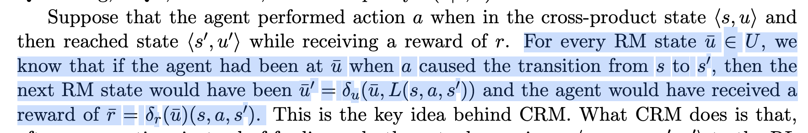
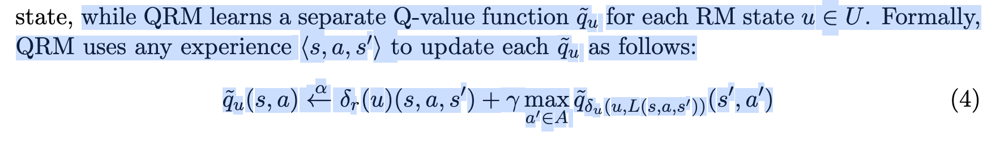
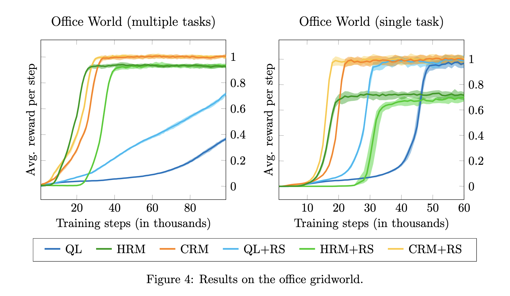

[TOC]
- Title: Reward Machines: Exploiting Reward Function Structure in Reinforcement Learning 2022
- Author: Rodrigo Toro Icarte et. al.
- Publish Year: 2022 AI Access Foundation
- Review Date: Thu, Aug 17, 2023
- url: https://arxiv.org/abs/2010.03950
Summary of paper
Motivation
- in most RL applications, however, users have to program the reward function and hence, there is the opportunity to make the reward function visible and RL agent can exploit the function’s internal structure to learn optimal policies in a more sample efficient manner.
Contribution
- different methodology of RL for Reward Machines
- compared to their previous studies, this work tested a collection of RL methods that can exploit a reward machine’s internal structure to improve sample efficiency
Some key terms
counterfactual experiences for reward machines (CRM)
- this policy learn over the cross product $\pi(a|s, u)$, but use counterfactual reasoning to generate synthetic experiences.
- these experiences can then be used by an off-policy learning method

- this means based on the property of RM, we can calculate imagined but correct experiences and use that for our training.
- but we know that by having a complicated reward machine, you have already make this MDP problem complicated, and this method is just for alleviating a bit of the situation.
Q-learning for reward machine
- learn separate q functions

Hierarchical RL for RM
- the agent will learn a set of options for the cross-product MDP, that focus on learning how to move from one RM state to another RM state.
- it means learn a good option that can transit states in RM such that it can reach the goal state.
- the sub-policy is corresponding to each edge in the RM
- the set of options will be $\mathcal A = {\langle u, \delta_u(u, \sigma)\rangle | u \in U, \sigma \in 2^{\mathcal P}}$
- however, it terminates when reward state transits to another,
- which means RM provides accurate information for transitions
Results

Potential future work
- the HRM thing, this might be related to LRS improvement